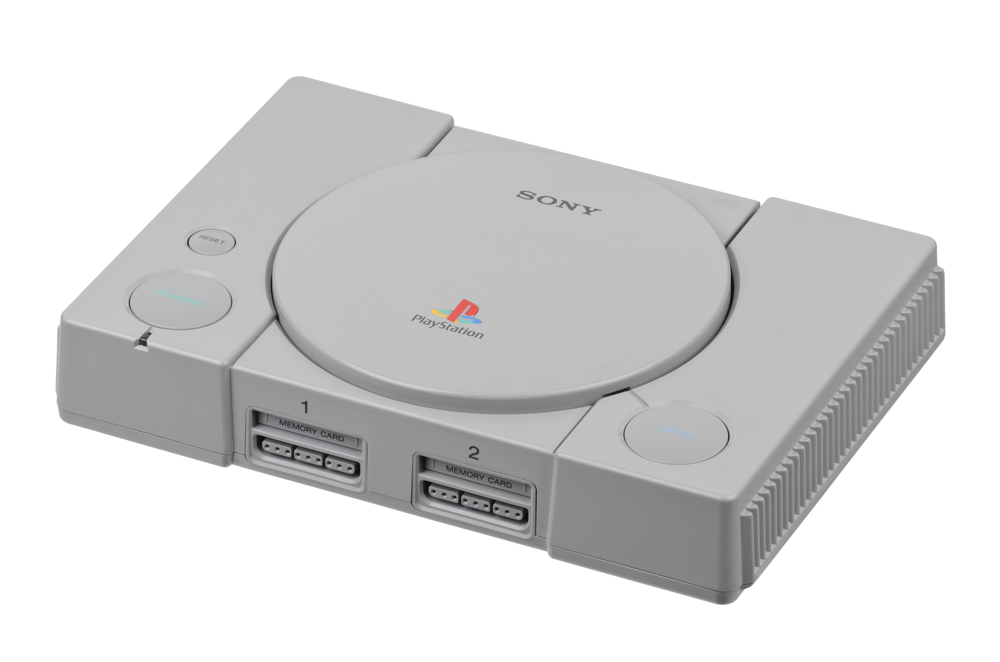

The Autopsy Report · Device #017
The PlayStation
The gray box that dragged gaming into the CD era — and made Sony a console giant overnight. We haven't opened one yet, so this report is built from the public record: the technical literature, independent teardowns, and the Sony silicon inside.
What is this thing?
The PlayStation (retroactively the "PS1") is Sony's 1994 fifth-generation console — the company's first game machine, born from a collapsed partnership with Nintendo over a CD add-on for the Super Nintendo. Sony went it alone, bet on CDs instead of cartridges, and sold over 102 million units. Wikipedia
This report covers the family from the launch SCPH-1000 (Japan, December 3, 1994) through the final SCPH-9000 series — including the tiny PS one redesign of 2000. Inside: a Sony CXD8530BQ CPU (a MIPS R3000-class design at 33.87 MHz), a CXD8514Q graphics chip, 2 MB of main memory, 1 MB of video memory, and the 2× CD-ROM drive that made full-motion video and CD-quality audio cheap. Wikipedia
Not yet on our bench
No unit of ours has been opened for this report. Everything below comes from public records: the published technical references, independent teardowns, and the historical record. The public-record facts are as complete as we could make them; what awaits the bench is everything that requires our hands on our hardware — our own photos, our own measurements, and confirmation of exactly which SCPH revision our future unit is. When a PlayStation lands on the bench, the thin spots below are exactly where we'll start.
A short history
- December 3, 1994Sony launches the PlayStation in Japan (SCPH-1000) — the CD-based console nobody asked for from a company that had never made one. North America follows September 9, 1995. Wikipedia
- 1995 – 1997Developers flee expensive cartridges for cheap CDs. Final Fantasy VII, Metal Gear Solid, Gran Turismo — the PlayStation becomes the default platform of a generation. Wikipedia
- 1997The DualShock arrives — twin analog sticks and vibration become the template every controller follows for the next quarter century. Wikipedia
- 2000The PS one redesign (SCPH-100) shrinks the console to a fraction of its size — the last gasp of the family as the PS2 takes over. Wikipedia
- 2006Production ends. Final tally: over 102 million units — the first console to break 100 million. Wikipedia
The outside
A gray slab with a round lid that pops open to reveal the disc, four gray buttons on top, and controller ports that look like they mean business. The PS one is the same design at pocket scale, in white. What the photo can't show: the parallel port on the back of early models — the one Sony quietly deleted in later revisions.

The board
The PlayStation's board is a 1990s time capsule: Sony-labeled chips everywhere, a big CD-drive controller section, and — on early boards — the parallel I/O port that later revisions removed. Public teardowns document the Sony CXD-series chips (CPU, GPU, sound) as separate packages, which is why this generation is so readable: you can point at each chip and name its job. Technical overview Board revisions changed meaningfully across the SCPH range (the parallel port's disappearance is the famous one), so our future unit's exact revision is bench work.
Under the microscope: the chips
What's on the board, what each part does, and how sure we are. Confirmed means primary evidence only — an FCC exhibit, a manufacturer manual or datasheet, or an official announcement. Likely means corroborated secondary or public-teardown evidence. Markings below come from public teardowns of one documented board revision; the SCPH range spans many.
| Chip | What it does | How we know | Dig deeper |
|---|---|---|---|
| Sony CXD8530BQ MIPS R3000-class @ 33.87 MHz |
The CPU — a 32-bit RISC processor, Sony's licensed take on the MIPS R3000. | Likely Marking documented in public teardowns; architecture per the technical literature. | Technical overview |
| Sony CXD8514Q | The GPU — draws the polygons and sprites, with 1 MB of dedicated video RAM. | Likely Marking documented in public teardowns. | Technical overview |
| Sony CXD2922Q | The sound processor (SPU) — 24 channels of CD-quality audio. | Likely Marking documented in public teardowns. | Technical overview |
| 2 MB DRAM + 1 MB VRAM | Main memory and video memory — the whole working set of a 1994 console. | Likely Per the published technical specifications. | Technical overview |
Sony never published public datasheets for the CXD-series chips — custom console silicon, once again. Awaiting the bench: our unit's exact SCPH revision, its chip date codes, and whether the parallel port survived on its board.
The government's file on this box
There isn't one. The original PlayStation has no radio transmitter — no Wi-Fi, no Bluetooth, nothing wireless at all — so it was certified under a Declaration of Conformity, the FCC's self-certification path for devices that don't intentionally radiate. No console-level FCC ID was ever issued, and no internal-photo filing exists. Same story as the PS2: absence of a filing is normal here, not suspicious.
Debug and service modes
Sony never published a public recovery or service menu for the original PlayStation. There is no button combination in any official Sony documentation we could find that boots one into a diagnostic screen. (The console's copy-protection and region behavior are well documented by the research community, but bypassing them is outside this report's scope — we document hardware, not defeat it.) Until we have a unit on the bench, we can't say what the board quietly offers.
What public records show
The public record gives us the PlayStation's full biography: launch and end-of-production dates, the MIPS CPU architecture, the memory configuration, the revision history (including the vanishing parallel port), and the regulatory posture (Declaration of Conformity, no console-level FCC ID). What it does not give us is anything that only exists inside a specific unit — SCPH revision, board date codes, or chip-level variations across a twelve-year production run. That's the bench's job.
What we haven't done
- We haven't opened, photographed, or measured a PlayStation of our own.
- We haven't confirmed which SCPH revision our future unit will be.
- We haven't verified the chip markings against a physical board.
- We haven't tested any service procedure.
- The photo above is a freely licensed stock image, credited in full — not our hardware.
By the numbers
- Model range: SCPH-1000 through SCPH-9000, plus the PS one redesign
- FCC ID: none at console level — Declaration of Conformity (no radio transmitter)
- CPU: Sony CXD8530BQ, MIPS R3000-class @ 33.87 MHz
- GPU: Sony CXD8514Q, 1 MB VRAM
- Sound: Sony CXD2922Q SPU, 24 channels
- Memory: 2 MB DRAM
- Media: 2× CD-ROM
- Launched: December 3, 1994 (Japan); September 9, 1995 (North America)
- Units sold: over 102 million — the first console to break 100 million
Words to know
Every term this page uses, in plain English. No prior knowledge required.
- MIPS R3000
- A 32-bit RISC processor design of the late 1980s — clean, simple, and the template for the PlayStation's CPU.
- SPU
- Sound Processing Unit — the PlayStation's dedicated audio chip, with 24 simultaneous channels.
- Parallel I/O port
- The expansion connector on early PlayStation boards, later removed. Peripherals and cheat devices used it.
- Declaration of Conformity
- The FCC's self-certification path for electronic devices that don't intentionally transmit radio signals. No FCC ID is issued.
- FCC ID
- The ID the FCC assigns to each approved wireless product. Devices with no radio don't get one — like this one.
Sources & confidence
- Launch dates, sales figures, CPU/GPU/memory specifications: published technical overviews. High confidence in the facts, medium in any single source.
- Chip markings (CXD8530BQ, CXD8514Q, CXD2922Q): public teardowns with photographs. Medium-high confidence; board revisions differ.
- Regulatory posture (Declaration of Conformity, no console-level FCC ID): researched; no filing expected or found. High confidence — a wired-only 1994 console.
- No public datasheets exist for the custom Sony CXD-series silicon. Stated as an industry documentation gap.
- Anything not listed here is unknown until the bench says otherwise. We'll say so, out loud, when that's the case.
We publish no firmware, serials, keys, or private data. This report uses only public records plus a freely licensed stock photo.
Legal note. BareBoard is an educational project. We don't publish, host, or distribute firmware, keys, passwords, or credentials. Product names and trademarks belong to their respective owners and appear here only to identify the hardware. If you believe anything here infringes your rights, contact us and we'll address it promptly.